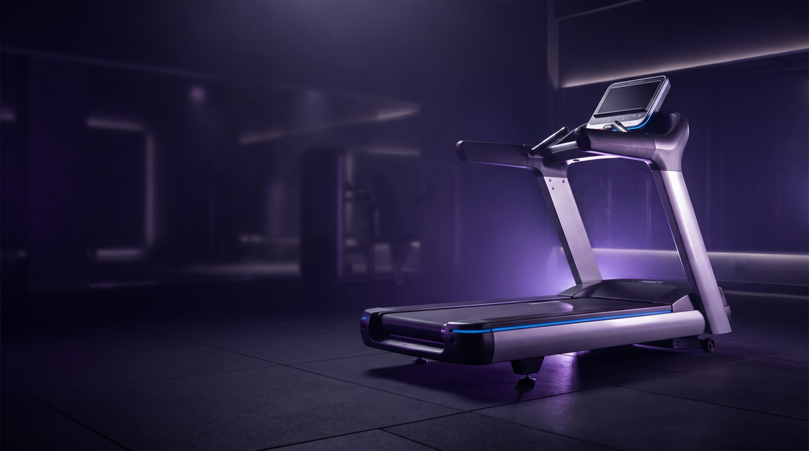

How often should you service commercial gym equipment? A 2026 guide for QLD operators
Daily, weekly, quarterly, annual: the exact service rhythm that prevents breakdowns, protects your warranty and keeps your members on the floor.
Read guide →
The commercial gym equipment maintenance checklist (daily to quarterly)
A printable, technician-grade checklist covering every machine on your floor.
Read →
Commercial treadmill maintenance: belt, motor and deck care that prevents breakdowns
The three failure points that kill commercial treadmills, and how to stay ahead of them.
Read →
What gym equipment downtime really costs your facility
The hidden maths behind one out-of-order treadmill, and how preventative servicing pays for itself.
Read →
When to replace strength-machine cables: a gym owner's safety guide
Fraying, broken strands, hidden fatigue: how to catch a failing cable before someone gets hurt.
Read →How long does commercial gym equipment last? Lifespan and replacement timing
Cardio, strength and ergometers have very different lifespans. Plan your capex around the real numbers.
Read →
Gym relocation checklist: move a fitness facility without the downtime
Plan, disassemble, transport and recalibrate an entire floor with zero lost member days.
Read →
Concept2 servicing: keeping RowErgs, SkiErgs and BikeErgs at factory feel
Chain, flywheel and damper care for the ergometers your members punish daily.
Read →Treadmill lubrication 101: why silicone, never WD-40
The single most common maintenance mistake that destroys treadmill belts and motors.
Read →Gym equipment safety and compliance in Australia: what operators must document
Your duty of care, the records insurers expect, and how servicing keeps you covered.
Read →